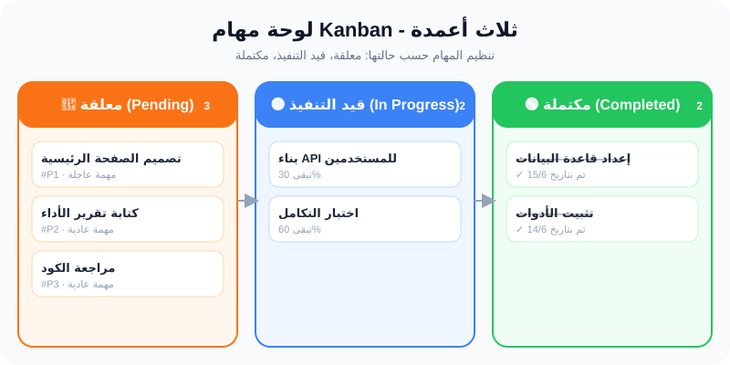
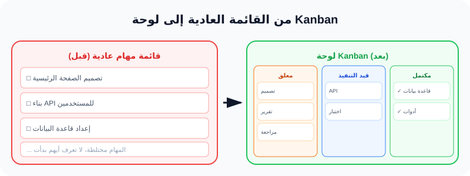

بناء لوحة مهام Kanban: تنظيم العمل بصرياً
"الرؤية البصرية لسير العمل تجعل الإنتاجية أسرع وأوضح."
ما هو Kanban؟
Kanban (تُنطق "كان بان") هي كلمة يابانية تعني "اللوحة البصرية" أو "البطاقة المرئية". في عالم البرمجة، هي طريقة لتنظيم وإدارة المهام باستخدام أعمدة تمثل مراحل سير العمل.
بدلاً من أن يكون لديك قائمة طويلة من المهام المختلطة (قائمة عادية)، تقسم المهام إلى 3 أعمدة حسب حالتها:
🔴
معلقة
لم تبدأ بعد
🟡
قيد التنفيذ
يعمل عليها شخص الآن
🟢
مكتملة
تم الانتهاء منها
كل مهمة (Task) تبدأ في العمود الأيمن (معلقة)، ثم تنتقل إلى الوسط (قيد التنفيذ) عندما يبدأ شخص العمل عليها، وأخيراً إلى اليسار (مكتملة) عندما تنتهي.
الأعمدة الثلاثة: تفصيل كامل
🔴 Pending (معلقة)
المهام التي لم يبدأ العمل عليها بعد. تنتظر دورها. يمكن لأي شخص سحب مهمة من هذا العمود عندما يكون مستعداً.
في قاعدة البيانات: status = 'pending'
🟡 In Progress (قيد التنفيذ)
المهام التي يعمل عليها شخص ما الآن. يجب أن يكون عدد المهام في هذا العمود محدوداً (WIP Limit) لضمان التركيز.
في قاعدة البيانات: status = 'in_progress'
🟢 Completed (مكتملة)
المهام التي تم الانتهاء منها بنجاح. عادةً تمر بمرحلة مراجعة قبل الوصول إلى هنا.
في قاعدة البيانات: status = 'completed'
ملاحظة مهمة: يمكنك إضافة أعمدة أخرى حسب حاجة مشروعك (مثل "مراجعة" أو "اختبار"). لكن للمبتدئين، 3 أعمدة هي البداية المثالية.
حالة المهمة (Status) وأهميتها
في قاعدة البيانات، كل مهمة لها عمود اسمه status (حالة). هذا العمود يخبرنا أين توجد المهمة حالياً في دورة العمل.
عندما يسحب المستخدم مهمة من عمود "معلق" إلى "قيد التنفيذ"، ما يحدث فعلياً هو:
// عندما يضغط المستخدم "نقل إلى قيد التنفيذ"
// React ترسل طلب PATCH إلى الخادم
PATCH /tasks/5/status
Body: { status: "in_progress" }
// Laravel يستقبل ويحدث في قاعدة البيانات
UPDATE tasks SET status = 'in_progress' WHERE id = 5;
هذا يعني أن تغيير الحالة ليس مجرد حركة بصرية - إنه تحديث حقيقي في قاعدة البيانات. وعندما تعيد تحميل الصفحة، ستجد المهام في أماكنها الصحيحة.
🏠 مثال من حياتنا اليومية: لوحة المهام المنزلية
تخيل أن عائلة تستخدم لوحة بيضاء في المطبخ لتنظيم المهام المنزلية:
📝 معلقة (Pending)
- • غسل الملابس
- • تنظيف الشبابيك
- • شراء البقالة
👨🍳 قيد التنفيذ (In Progress)
- • تحضير الغداء → أحمد يعمل عليها الآن
✅ مكتملة (Completed)
- • ترتيب غرفة المعيشة ✓
- • إخراج القمامة ✓
لاحظ كيف أن اللوحة تعطيك صورة كاملة عن وضع المنزل في ثانية واحدة. هذا هو بالضبط ما تفعله Kanban في تطبيق الويب!
الربط مع FlowPilot: مهام المشاريع
في FlowPilot، كل مشروع (Project) يحتوي على عدة مهام (Tasks). الآن سنضيف لوحة Kanban لإدارة هذه المهام بصرياً.
ما سنبنيه في FlowPilot:
- ✅ جدول
tasksمرتبط بجدولprojectsعبرproject_id. - ✅ كل مهمة لها
statusبقيم: pending, in_progress, completed. - ✅ صفحة
/tasks/boardتعرض 3 أعمدة حسب الحالة. - ✅ أزرار "نقل →" لتغيير حالة المهمة.
- ✅ كل عمود له لون مميز (أحمر، أزرق، أخضر).
6 خطوات عملية لبناء لوحة Kanban
الخطوة 1: إنشاء Task Model مع Migration
php artisan make:model Task -m
في ملف migration، أضف الأعمدة: project_id (مفتاح خارجي)، title، description (اختياري)، status (القيمة الافتراضية 'pending')، user_id.
الخطوة 2: كتابة Migration الصحيح
public function up(): void
{
Schema::create('tasks', function (Blueprint $table) {
$table->id();
$table->foreignId('project_id')->constrained()->cascadeOnDelete();
$table->string('title', 255);
$table->text('description')->nullable();
$table->string('status', 20)->default('pending');
$table->foreignId('user_id')->constrained()->cascadeOnDelete();
$table->timestamps();
});
}
cascadeOnDelete() تعني: إذا حذف المستخدم أو المشروع، تحذف كل مهامه تلقائياً. هذا يمنع البيانات اليتيمة (orphaned records).
الخطوة 3: إضافة العلاقات في Model
في Task.php و Project.php، نضيف دوال العلاقات (relationships) لربط الجدولين.
// app/Models/Task.php
protected $fillable = ['project_id', 'title', 'description', 'status', 'user_id'];
public function project()
{
return $this->belongsTo(Project::class);
}
// app/Models/Project.php - أضف هذه الدالة
public function tasks()
{
return $this->hasMany(Task::class);
}
belongsTo تعني أن المهمة تنتمي لمشروع واحد. hasMany تعني أن المشروع له مهام متعددة.
الخطوة 4: إنشاء TaskController مع updateStatus
php artisan make:controller TaskController
// دالة index() - تجلب المهام وتعرض اللوحة
public function index()
{
$tasks = Task::with('project')->get();
return Inertia::render('Tasks/Board', [
'tasks' => $tasks,
'success' => session('success'),
]);
}
الخطوة 5: كتابة updateStatus()
هذه الدالة هي قلب لوحة Kanban. تستقبل status جديد وتحدثه في قاعدة البيانات.
public function updateStatus(Request $request, Task $task)
{
// 1. التحقق من أن status الجديد صالح
$validated = $request->validate([
'status' => 'required|in:pending,in_progress,completed',
]);
// 2. تحديث الحالة في قاعدة البيانات
$task->update($validated);
// 3. إعادة التوجيه مع رسالة نجاح
return redirect()->back()->with('success', 'تم تحديث حالة المهمة');
}
قاعدة in:pending,in_progress,completed تمنع المستخدم من إرسال حالة غير صالحة مثل 'done' أو 'deleted'. هذا مهم لأمان البيانات.
الخطوة 6: تسجيل المسارات وبناء واجهة React
// routes/web.php
Route::middleware(['auth'])->group(function () {
Route::get('/tasks/board', [TaskController::class, 'index'])->name('tasks.board');
Route::patch('/tasks/{task}/status', [TaskController::class, 'updateStatus'])->name('tasks.status');
});
في واجهة React، أنشئ مكون KanbanColumn لكل عمود. استخدم useForm من Inertia لإرسال طلب PATCH عند الضغط على زر النقل.
شرح الكود سطراً سطراً: TaskController
// namespace: مجلد الـ Controllers
namespace App\Http\Controllers;
// استيراد الكلاسات
use App\Models\Task;
use Illuminate\Http\Request;
use Inertia\Inertia;
class TaskController extends Controller
{
// index: تجلب المهام مع المشروع المرتبط
public function index() {
// with('project') تجلب اسم المشروع لكل مهمة (Eager Loading)
$tasks = Task::with('project')->get();
return Inertia::render('Tasks/Board', [
'tasks' => $tasks,
'success' => session('success'),
]);
}
// updateStatus: تغيير حالة المهمة
public function updateStatus(Request $request, Task $task) {
// التحقق: status يجب أن يكون واحداً من 3 قيم فقط
$validated = $request->validate([
'status' => 'required|in:pending,in_progress,completed',
]);
// تحديث حقل status فقط (وليس كل الحقول)
$task->update($validated);
// redirect()->back() يعيد المستخدم لنفس الصفحة
return redirect()->back()->with('success', 'تم تحديث حالة المهمة');
}
}
redirect()->back() مفيدة هنا لأننا نريد البقاء في نفس صفحة اللوحة بعد تحديث الحالة، وعدم التنقل لصفحة أخرى.
النتيجة المتوقعة
🔴 عمود "معلق"
- ✅ المهام التي status = 'pending'
- ✅ كل بطاقة تظهر عنوان المهمة.
- ✅ زر "نقل → قيد التنفيذ".
🟡 عمود "قيد التنفيذ"
- ✅ المهام التي status = 'in_progress'
- ✅ أزرار: "→ معلقة" و "→ مكتملة".
- ✅ لون خلفية أزرق فاتح.
🟢 عمود "مكتملة"
- ✅ المهام التي status = 'completed'
- ✅ زر "→ قيد التنفيذ" (للتراجع).
- ✅ لون خلفية أخضر فاتح.
❌ الأخطاء الشائعة
🚫 الخطأ 1: صفحة فارغة - لا تظهر المهام
السبب: نسيت تمرير 'tasks' => $tasks في Inertia::render، أو لم تستخدم usePage().props بشكل صحيح في React.
الحل: تأكد من أن الـ Controller يمرر المصفوفة وأن React تقرأها من props.
🚫 الخطأ 2: MethodNotAllowedHttpException (405)
السبب: أرسلت طلب POST بدلاً من PATCH. أو نسيت _method: 'patch' في طلب Inertia.
الحل: استخدم router.patch() من Inertia أو أضف _method: 'patch' في بيانات الطلب.
🚫 الخطأ 3: Validation error - الحالة غير صالحة
السبب: أرسلت status مثل 'done' أو 'finished' ولكن Laravel ينتظر pending, in_progress, completed فقط.
الحل: استخدم القيم الصحيحة أو أضف القيمة الجديدة إلى قاعدة in:.
🚫 الخطأ 4: Cascade delete لا يعمل - بيانات يتيمة
السبب: نسيت cascadeOnDelete() عند إنشاء جدول tasks. عند حذف مشروع، تبقى مهامه عالقة.
الحل: أضف ->cascadeOnDelete() في migration وأعد تشغيله.
مخططات توضيحية

لوحة Kanban: الأعمدة الثلاثة

قبل وبعد: من القائمة العادية إلى Kanban
📌 ملخص الدرس
المفاهيم الرئيسية:
- ✅ Kanban = لوحة بصرية لإدارة سير العمل.
- ✅ 3 أعمدة: معلقة، قيد التنفيذ، مكتملة.
- ✅ كل مهمة لها status في قاعدة البيانات.
- ✅ تغيير الحالة = تحديث في قاعدة البيانات.
الخطوات القادمة:
- 📌 الدرس القادم: Inertia Forms - إدارة النماذج بذكاء.
- 📌 ثم: رفع الملفات والمرفقات للمهام.